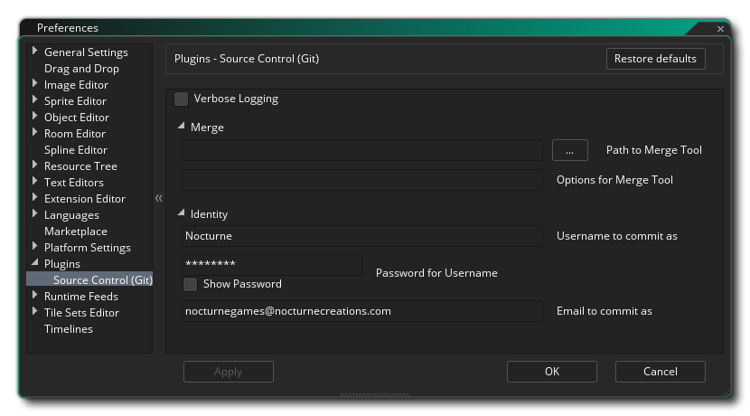

The Plugins Preferences are used to control any extra plugins that have been added to the GameMaker Studio 2 IDE. By default this has one section dedicated to the Source Control plugin for integrating GameMaker Studio 2 projects with Git.
This section deals with the preferences that you are required to set to get the Git SCM plugin to work with GameMaker Studio 2. First you have the set of general options:
Next is the User Identity section with the following fields which are required to be filled in:
- Automatically open source control output window: When this is checked, the source control output window will be shown automatically when something changes. This is on by default.
- Verbose Logging: Enable verbose logging for the Git output log. This is off by default.
- Username to commit as: Here you must enter the username that you will be using to do any commits to Git with (this must be the same as the username specified when you set up your Git repository).
- Email to commit as: The email that is associated with this Git identity.
After setting up the User Identity, you can then add a new username/password combination for authentication by clicking the button labelled Add new User/Pass authentication, which will open the following window with different fields for you to fill in:
You can also Add a new SSH keypair authentication by clicking the button with that label. This will open the following window for you to fill in:
Below these buttons you can then set up the Merge Tool and the Diff Tool for SCM with these options:
- Path to Merge Tool: Here you specify the full file path to the Git merge tool.
- Options for Merge Tool: In this field you can add any extra commands to be run whenever you use the Merge Tool.
- Path to Diff Tool: Here you specify the full file path to the Git diff tool.
- Options for Diff Tool: In this field you can add any extra commands to be run whenever you use the Diff Tool.
Finally, after setting those up you have one last option:
- Automatically enable source control: When this is checked, source control will be enabled for all new projects automatically. This is off by default.